heartbeatz gave me the opportunity to explore JavaScript and jQuery through the medium of a music app. The functionality of the project is simple in concept: it consists of a homepage, a collection page, and an album page, but it’s the engine of this site that carries its complexity. Under the hood, I programmed blocks of code to generate the collection page’s content, cycle through albums for the album page, and present information for the player bar. In addition to these features, I gave the site a slick coat of paint by rebranding it from its original direction.
I was tasked with programing a fexible web application to play music, using minimal reliance on HTML. This project was important to me because I wanted to explore the dexterity of JavaScript and jQuery.
I needed to create a site that could update content without constant maintenance to the HTML. Such maintenance would cost too much time and energy. I needed a site with flexible content.
The key to my solution placed a heavy emphasis on using JavaScript to reduce my dependency on HTML. Moreover, I reduced the labor of JavaScript by employing jQuery. The result amounted to a malleable library within my JavaScript files that could insert content into my static HTML files.
I kept to a minimum the code for my collection HTML page by leaving the content between my section tags bare.
Future Content Would Fill This Free Space in the Section Tag
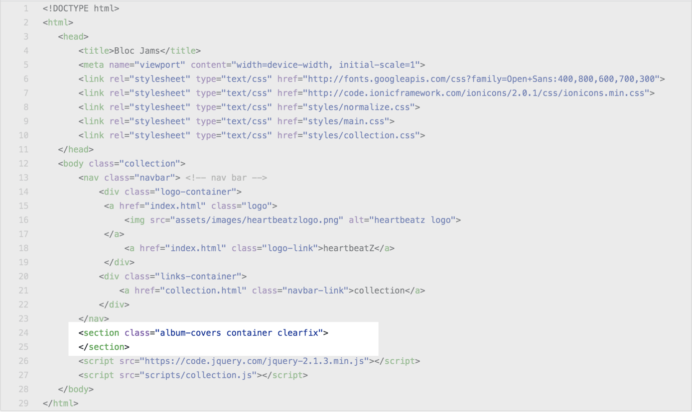In my collection.js, I generated content for my collection page by using a variable to create an object that would be my album and a for loop to customize the number of album objects for my collection.html.
This Content Was On Standby in My JS File
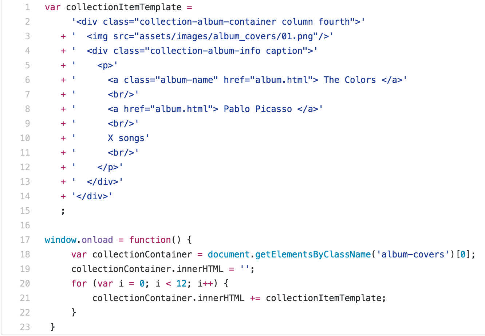This JavaScript made the content easily malleable, reducing the labor when needing to implement an update.
HTML Without the Use of JavaScript
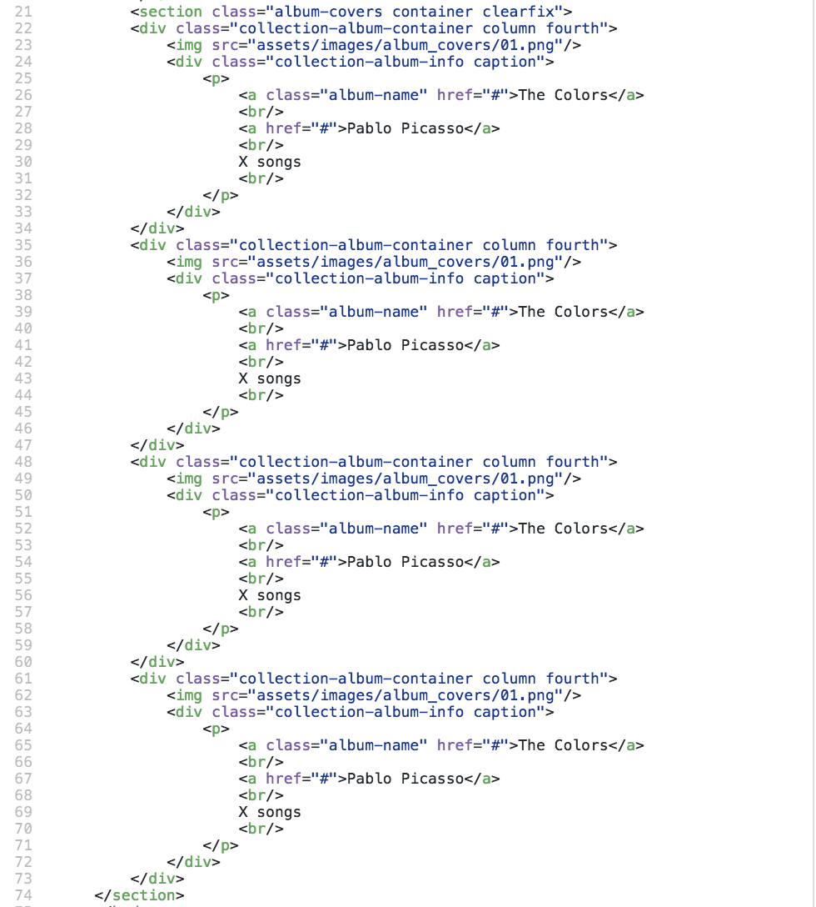HTML With the Use of JavaScript
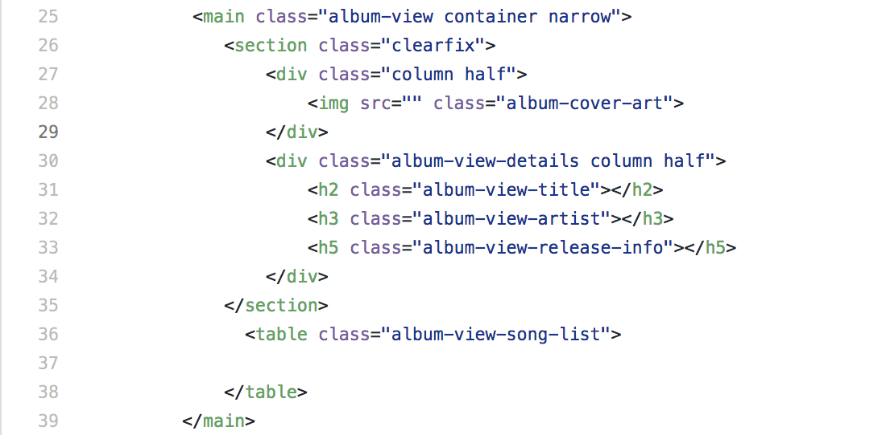The content for my play bar required maximum flexibility, using JavaScript to produce most of its content. My album.html page, which hosted the placement of my play bar, was coded similarly to my collection.html, in that I coded tags without content.
Future Content Would Fill This Free Space
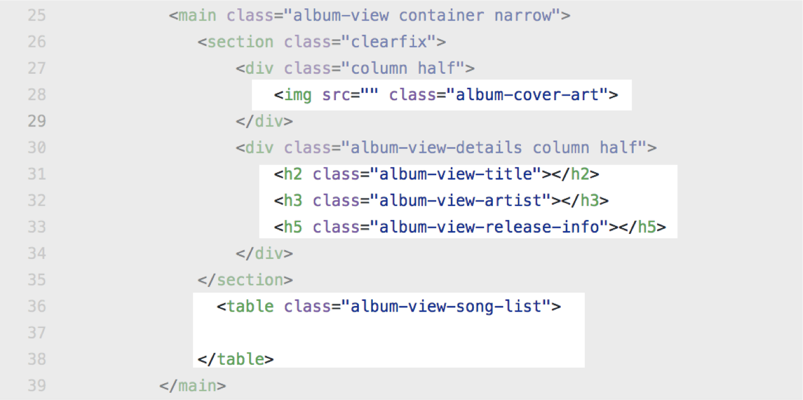To fill those areas with content, I used many variables, functions, conditional statements, and objects within my album.js file to insert and remove information for my player bar while allowing the user to adjust settings (such as volume and seek bar).
At This Stage, I Relied on DOM
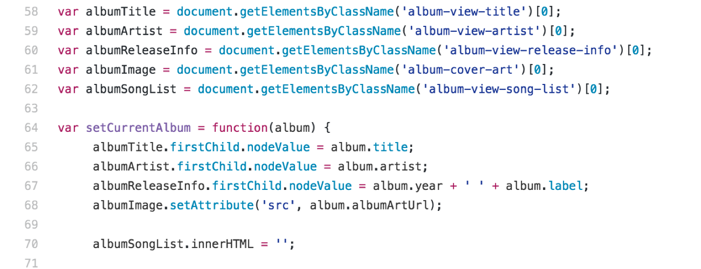Refactoring with jQuery: With the main goal of my project being to reduce the amount of code required to make a simple music player, I employed jQuery to reduce the amount of space taken up by JavaScript. The space reduced by refactoring JavaScript is self evident.
Red: Dom - Green: jQuery
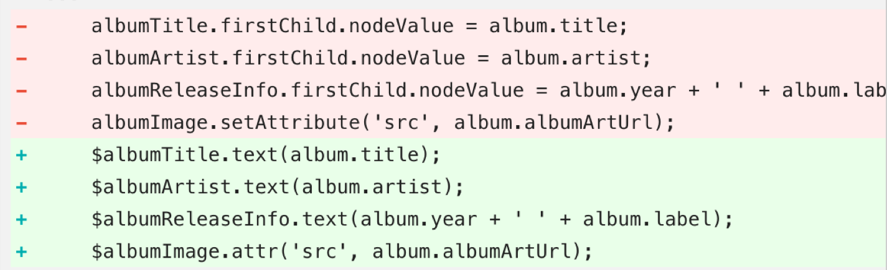Red: Dom - Green: jQuery
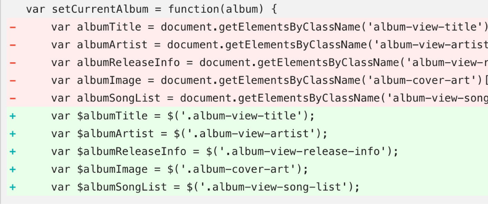Going in, I didn’t expect to discover so many ways to program the effect I wanted to produce with JavaScript. After programing a solution, I would show my code to a third party for feedback, only to discover an even more succinct way to code my solution. I enjoyed this process of discovery.
Collaboration is essential to finding a solution. No matter how much you think you know about JavaScript and jQuery, there will always be more to learn.
Music is passion and life without it is void of happiness. That’s why when I had an opportunity to work on a rebrand design for a responsive music site I was ecstatic! Music is what makes work seem like play and I couldn’t wait to play with the colors and designs of this site. The majority of the content would be staying the same but the colors, logo, hero image, and name were up for grabs! The site was antiquated and it needed to be rebranded to bring it back to life.
I immediately began brainstorming themes for the rebrand so I would know what direction to take my design. I determined my rebrand theme based on the feeling that music = passion and passion inspires life.
Bloc Jams, the previous site name, no longer made sense with my narrative of passion. Bloc implies something that is blocky or chunky which can be some peoples love story but not mine! I needed a name that got to the heart of what I'm about-passion and music. Sound Waves, FreeStyle, SongRise, and Pump were all initial brainstorming contenders but I landed on heartbeatz to portray the interlay of music and passion.
1st Draft: Home Page
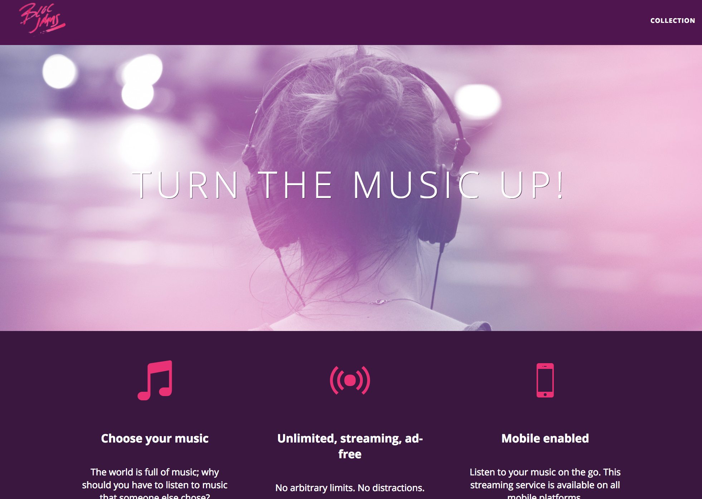1st Draft: Collection Page
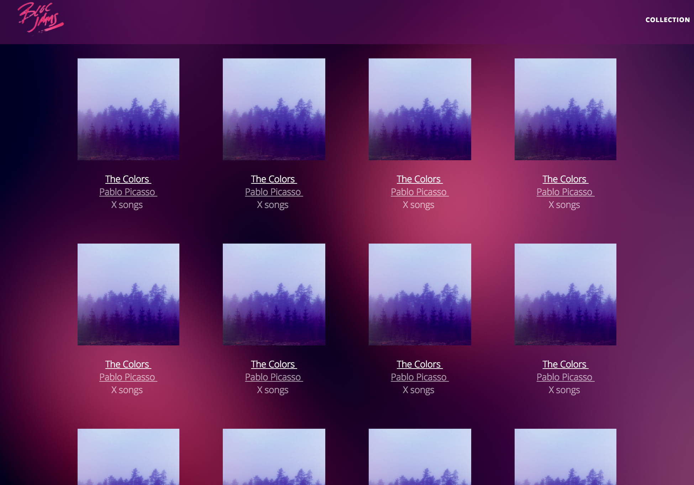1st Draft: Album Page
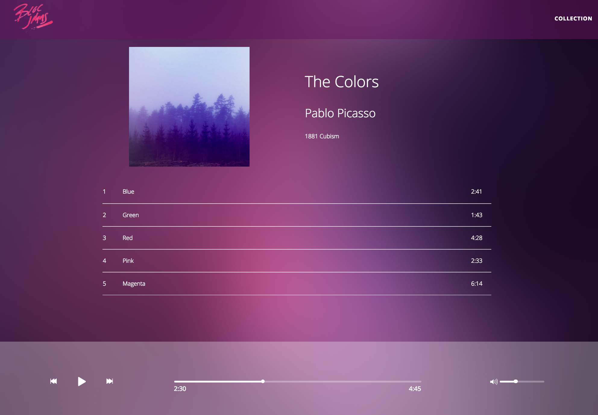From there I brainstormed ideas for a logo. I considered headphones, music notes, record machines and vinyl. Vinyl was exciting but I determined it would not help the site shake off it’s antiquated feel. Nothing was sticking and then BOOM-I came up with a design that struck a chord in me! I would design a heart that would hint at a B design as well for heartbeatz. I decided to put the heart in a line from a heartbeat but the logo wasn’t as scalable as I would have preferred and the combination of the logo and site name would have been too much for a navigation bar. I dropped the line from the heartbeat but kept the B heart. The heart isn’t closed at the bottom but it spreads out on both sides to show the passion is not contained but it reaches out to others!
Not Enough Passion
Not Scalable Enough
Almost, But Not Quite
Just Right
Colors were up next! I wanted to communicate passion and love without coming across as sappy or overly feminine. I played around with a variety of reds but the colors were too bright and I was afraid that my desire for passion would turn into a giant red stop sign instead! As a result I started adding some white to the mix and entered the realm of the pinks! I didn’t want cotton candy to be on the mind so I started heading for more peachy tones and voila! From the peachy tones I was able to come up with the complementary mint greens and tans.
Primary Color
Secondary Color
Tertiary Color
The final thing that needed rebranding was the hero image but that was easy with the new foundation I had finished laying for the site. I found an image of a woman, listening to music (of course) her hair vibrantly colored and in motion to show a streak of rebellion.
Runner Up

Winner
Finished: Home Page
Finished: Collection Page
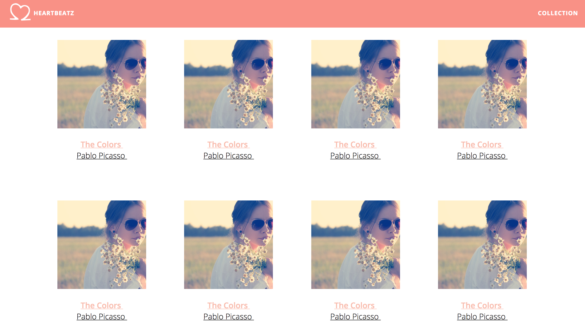Finished: Album Page
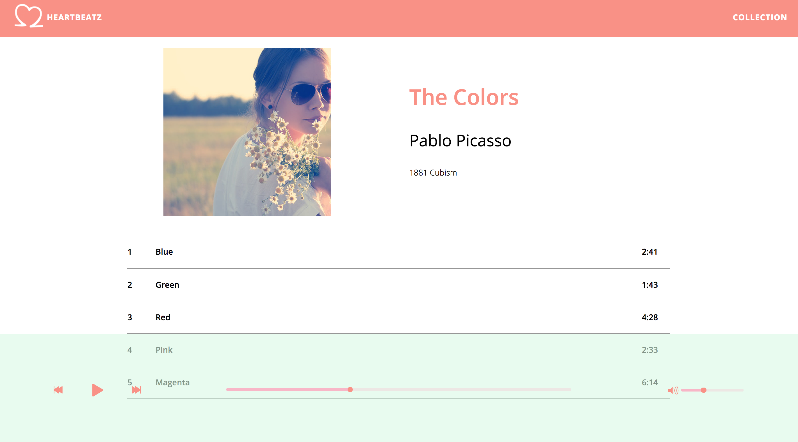As I stood back from the project, I smiled. Sometimes working gets mundane and I end up with projects that are less exciting than others. Working on a project that intended to build passion in others had consequently built the passion in me as well. It reminded me why I love design. Design is about friendly functionality above all else but it’s also about bringing life to projects that are dying. As a designer, I spend a lot of time pumping energy into designs that may or may not thank me later on for birthing them but the satisfying ones are the ones that give back as much as you pour into them. And that was this rebrand design.